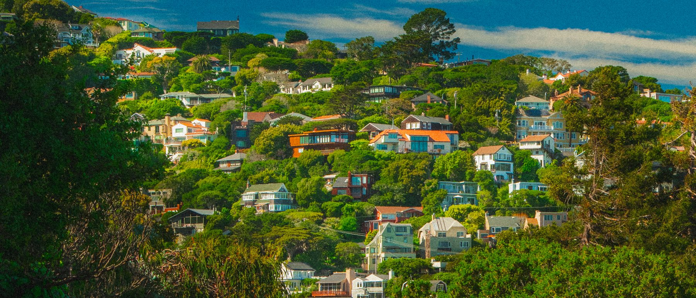
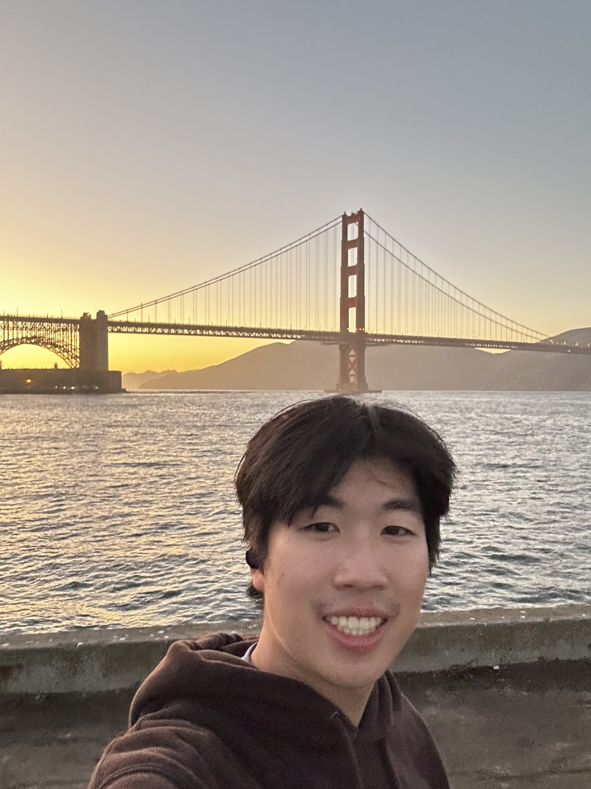
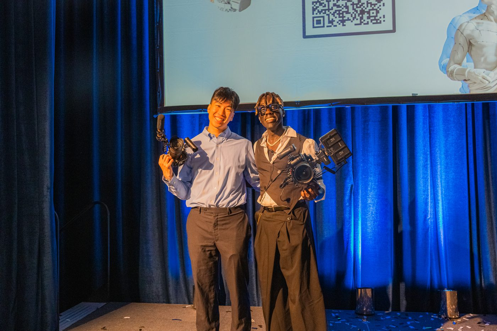
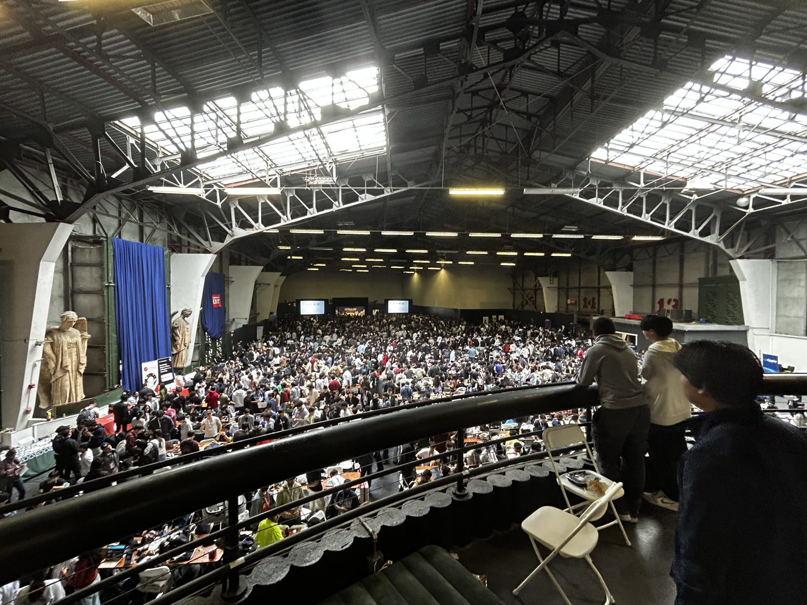
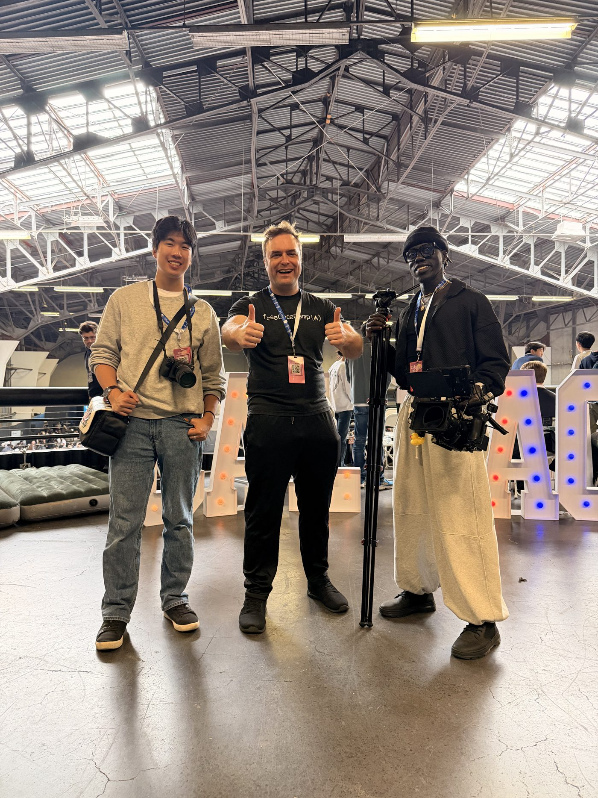
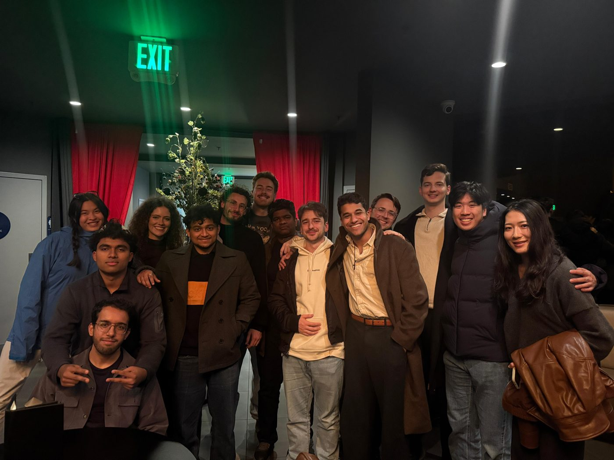
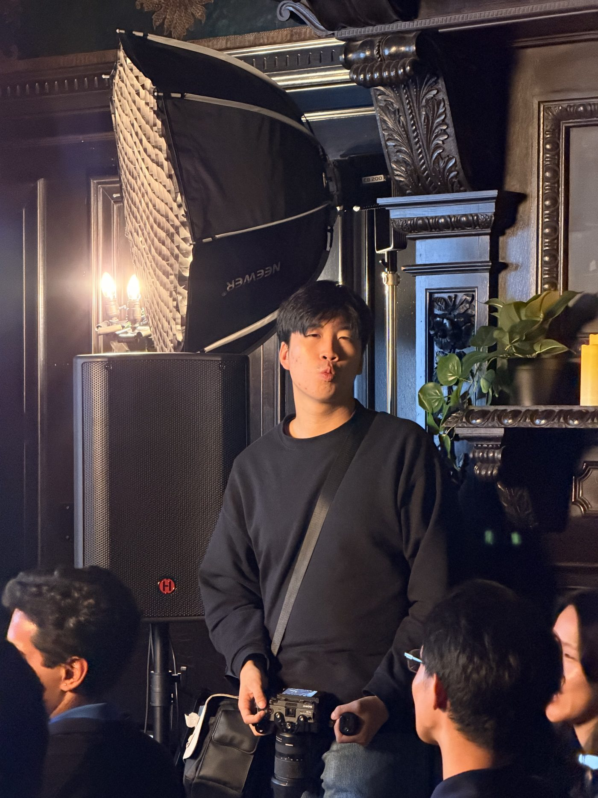
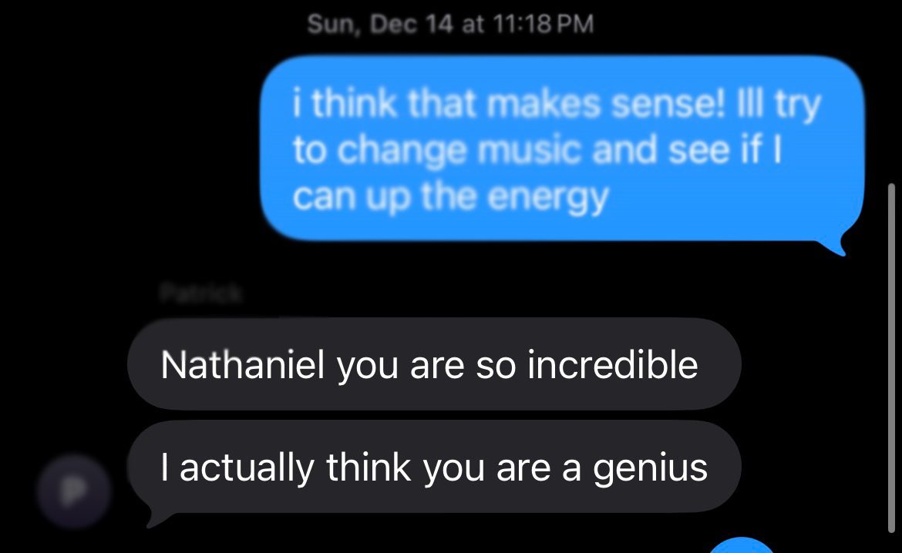
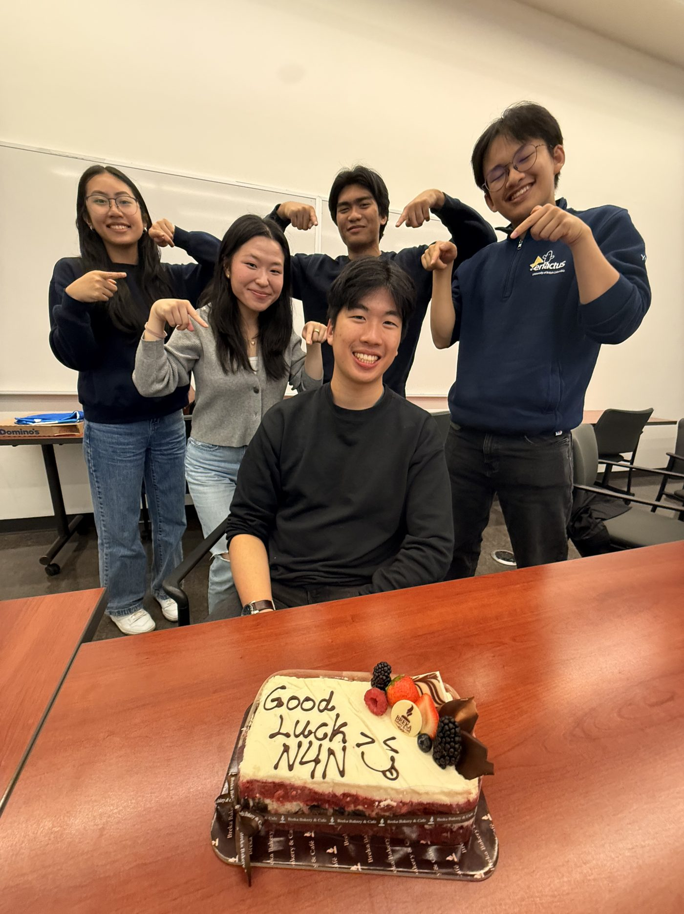

![]()
![]()

Life in Fast Forward: Reflecting on 3 months working in San Francisco.
Below are some reflections I had in December of last year, a week before returning back to Vancouver from 3 months in San Francisco. I think my thoughts have developed since on these topics, but I wanted to keep them here unaltered to remember. I challenged myself to not use AI to write this, so apologies for thoughts being disjointed.
Hey everyone. I delayed going back home a week early to make a personal video reflecting on my time in San Francisco so far, but I got sick recently (I suspect COVID-19 from a party) and so instead I’m taking the time to write these essays instead. Crazy how timing works sometimes.
What you are reading is my brutally honest thoughts. Living in SF has been an experience I’ve had on my bucket list for a while, and in Vancouver I think SF is quite hyped up. Which makes it all the more important that I write candidly about my experience. If you think SF is where you want to be, or if you're creative like me, keep reading.

October: Doing favors.
October was filled with plenty of imposter syndrome as a videographer. In San Francisco, everyone is adjacent to media work. If they didn’t own a studio or dabbled in it, they at least have helped with their friend’s launch video. If they haven’t done that, they’ve made some videos on social media, and read up on all the new algorithm changes and “growth hacks”. If they haven’t done that, they’ve probably AI generated videos for fun. Everyone here values taste, and so they love to shout all their critiques, gear recommendations (spoilers: sony fx3 or ur broke), and they make sure you leave set knowing their opinion on everything. Yet paradoxically, they still will seek you as a professional opinion. This was the root cause of the imposter syndrome, since I always felt like I was on the same ground as everyone else when it came to technical and professional knowledge.
However, I had to get used to the trade, and luckily, my senior Sunday helped me a lot with that aspect I lacked. Now, not only do I know my way around a camera rig, I’ve been taught how confidence can go a long way. Simply saying “let’s try it” is a hell of a lot easier to swallow for a client than "I don't know”. Taking this principle to heart got me to a number of cool contracts, and pretty soon, I was managing 2 or 3 projects a week, on top of my existing residency work.

That extra work did start to pile up though.
One time, I met a tech guy at a competition called Calhacks. I was filming footage for a YouTube documentary and suddenly a guy came up to me in a yellow construction hard hat and asked me if I could record him. Of course I said yes, and he started beatboxing.


Anyways, we got each other’s contact so I could send the recording and we decided to meet up a week later at a Hong Kong Cafe. He said he was thinking of launching a startup and would want to chat about how to create a video about his origin and why he wants to start a company that empowers people to do more hackathons. I loved this guy’s story, and he had a really interesting life growing up in Asia and now doing AI research and his master’s at Stanford. But when it came time to talk about actually making the video, the conversation got tense.
He asks me my rate.
I ask him about the scope.
He gives some details.
I say $500.
He stops. He starts telling me that they are completely bootstrapped, short on cash flow, and wondered if I could lower the price. I said maybe. He said he’ll follow up with me. Conversation ended awkwardly, and that was the end of that.
This experience was one that I came home feeling bad about. On one hand, I know the typical rate here is much higher than what I said, and splitting up my limited time even more simply was not worth it. Yet, I had just sat in a cafe listening to his story for the past hour basically. What was one favor for someone who I could help out?
This example wasn’t unique. I found that actually almost everyone here was building something, and everyone wanted a video.
I thought that my concern would be getting new projects. But nobody told me that the biggest thing running shop here in SF has been to protect your time. When you want to undersell yourself and do favors in hopes that you might be able to maintain a connection or upsell in the future, you lose time to do the best work you can. That’s why I’ve had to stop doing favors.
November: To be or not to be a creative genius.
Should you ever call yourself a genius?
I would probably never, because that’s corny. But for some really odd reason, it creeped into my head a number of times this month. Hear me out.
This month, I got to watch people demo their products in front of other builders and investors at The Residency’s demo day event. It was really cool, not only because a lot of the people I live with are incredibly cracked and raise millions of dollars, but also because it was my first exposure to people pitching themselves.

Living with some of these people day to day and hearing how they pitched themselves, I was blown away.
You’re telling me this guy I eat dinner with everyday won design competition awards, hiked mount everest, is a pro Call of Duty player, and raised millions of dollars?
It got me to ask, “how would I sell the most cracked version of myself?” Is there a way that I can bend the truth, so that I could stand out among people here who were very likely doing the same?

So, I got to reframing my life and achievements. A piano player that can only play 5 anime songs? More like “Concert pianist who has practiced for over 10 years”. A guy studying business? More like a guy studying the intersection of company growth and operational excellence??? Gap year? More like a college dropout going full-time on his passions.
Going down this line of thinking inevitably led to me trying to sum up the ideal archetype I wanted to be. And, though I hesitate to admit this, being a “creative genius” definitely came to mind. A young genius who wrote Thomas the Tank Engine parodies when he was 5, and performed plays to his parents when he was 7, and drew comic strips and gave them to my classmates during silent reading time at 11. The guy who is good at every medium… music, film, sketching, and everything in between, all at the same time.
I obviously never would say this to anyone, but this reframing exercise made me start to treat myself like I was one. I began trusting in myself a bit more, and lo and behold, my skills were turning heads. People here were having their expectations exceeded, and in no time, that “genius” title I made for myself became something someone actually called me.

Well, after getting over the pride I felt from someone calling me this, I reflected on what this title actually meant for me. I looked at the work he commented on. Sure it was good. But it wasn’t great. I know me working in TCS would have never even had this thought of “a self-proclaimed genius”, because I would have my pegs knocked down every single time I sent something out for the team to see.
Getting this title actually echoed to me was a wake up call that my expectations have actually dropped. That the praise I am receiving is from a second-rate league.
Among AI slop and most corporate videographers, I am a “genius”. Among the creatives actually pushing the field forward and carrying a refined creative taste, I am an idealist. From that, it was a no-brainer where I wanted to stand.
Basically, no. Don't call yourself that. If you think it, something’s probably off.
December: Should I drop out?

Let me preface this first - I dont think quitting things early is cool. Which is why 4 months ago, this would not be a thought in my head. However, a series of recent encounters has really made me push on that belief a bit, and has resulted in this train of thought.
About a week ago, I was filming a promotional video for a MongoDB party, with 2 dudes, one representing MongoDB, the other from a YC startup who was pretty good acting as an influencer.
I loved chatting with the MongoDB guy, Patrick, in particular. He previously worked at Nike, and was basically paid to run marathons and do every cool physical events in his area. He got hired because he was a mascot at his school, but since these Nike roles are usually reserved for ex-athletes and olympians, he had to step up a lot. He told me it was rough.
Anyways, what followed was a really enlightening conversation on how to make the most out of my time outside school. We talked about my love for creating. I showed him my music. He checked out my Instagram. Patrick basically came to the conclusion that “you’re too creative to be in school”.
In the same car ride, Patrick referred me to a 10k MongoDB contract in the car. The YC startup guy also offhandedly offered me a job (after hearing how much I currently make).
A gear in my head turned.
Recently, I was at a YC alumni party at the top of a skyscraper the other day filming. I met a dude named Ryan who has a very successful company for creating launch videos, and was only a year older than me. Super dope conversation, he even knew one of my coaches Justin from Founder’s Inc which was super sick. Only 4 months ago, he dropped out of school, and he was trying to promote Roblox games to make money and lived month to month.
I bring up both these examples because I have found that the city moves fast. I’ve experienced this first-hand. In two months I have made more than I have ever made (which isnt a high bar tbh), and have met so many interesting people that push me forward in both opportunity and perspective. I can get a contract for a huge event after meeting a guy in a few hours. Ryan in 4 months went from 0 to where he is now. The videographers I know off the top of my head in the bay area took at most 2-3 full-time years to go from nothing to running the city. There are at most 15 videographers doing launch videos right now in SF. And the demand is sky high.
If I took the 2 years from school and spent it all being an active full-time filmmaker in this city instead, would I be better off? I’m pretty confident it’s a yes.
I know San Francisco isn't going to disappear. I can always go back. But things also work on momentum. If you are the direct referral from 5 people and you leave for 2 years, you’ll be replaced just as fast as you came. I’ve acknowledged that the time that I am gone will take months to get back if I choose to continue doing videos in SF. And the project that can transform my life feels right around the corner.
I don't really have a tangible reason why I should go back to school. It’s always good not to close doors, but, do I really think I’ll work in corporate operations? Is stunting my work experience for 2 years REALLY that valuable if I even have the slightest chance of going back to the bay?
I hope these thoughts sound reasonable. While I don’t think I’m planning to act on them, it does sting me with a bit of truth.
I talked to my parents about it and have come to the following conclusion: I am talking out my ass. I don’t have a big salary lined up for me. Heck, I am lowkirkenuinely illegal. I am being coerced with ideals and goals from other people that I have yet to see myself. So as of right now, this conversation is on pause. Stay tuned.